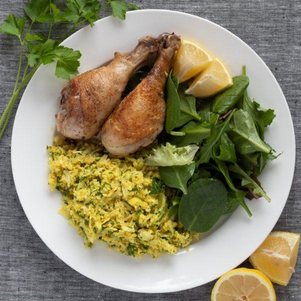

Crispy Chicken with Cauliflower Rice Pilaf and Fresh Greens

Nutrition (per serving)
692.6 kcalCalories
56.1 gProtein
12.1 gCarbs
46.8 gFat
Full nutrition table
| Calories | 692.6 kcal |
| Total fat | 46.8 g |
| Saturated fat | 18.7 g |
| Trans fat | 0.9 g |
| Cholesterol | 307.2 mg |
| Sodium | 377 mg |
| Carbohydrates | 12.1 g |
| Fiber | 4.5 g |
| Sugars | 3.7 g |
| Protein | 56.1 g |
| Potassium | 1271.5 mg |
| Calcium | 104.5 mg |
| Iron | 4.4 mg |
| Vitamin A | 136.3 IU |
| Vitamin C | 99.2 mg |
| Vitamin D | 18.6 IU |
Cookware
Ingredients
- 1 medium headcauliflower
- 2 ½ lbchicken drumsticks
- 4 fl ozchicken or vegetable broth
- 1 small bunchItalian (flat-leaf) parsley
- 1lemon
- 1 (5 oz) pkgspring mix (mixed greens)
- black pepper
- butter, unsalted
- cayenne pepper
- extra virgin olive oil
- garlic powder
- onion powder
- paprika
- salt
- turmeric, ground
Steps
- Preheat oven to 425°F.
- Wash and dry the fresh produce. (Skip the mixed greens if they came pre-washed.)1 medium head cauliflower
1 small bunch Italian (flat-leaf) parsley
1 (5 oz) pkg spring mix (mixed greens)
1 lemon - Preheat a cast iron or oven-proof skillet (if available) over medium-high heat.
- Meanwhile, pat the chicken dry with paper towel and place on a plate; season with salt and pepper on both sides.2 ½ lb chicken drumsticks
1 tsp salt
½ tsp black pepper - Once the skillet is hot, add butter and swirl to coat the bottom. Add the chicken to the skillet and cook until skin is golden and crispy, about 4 minutes; flip and repeat on other side.2 tbsp butter, unsalted
- Place skillet in the oven and continue cooking for 15 minutes, or until cooked through. If your skillet is not oven proof, transfer to a baking dish with a wire rack.
- Remove the leaves from the cauliflower. Using a food processor or box grater, grate to rice-like texture. Transfer to a large bowl and set aside.
- Place a large pot over medium heat. Add butter, onion powder, garlic powder, paprika, turmeric, cayenne pepper, and salt.¼ cup butter, unsalted
½ tsp onion powder
½ tsp garlic powder
½ tsp paprika
½ tsp turmeric
⅛ tsp cayenne pepper
½ tsp salt - Once the butter is fully melted, add the cauliflower and cook for 2 minutes, stirring occasionally.
- Add broth to the cauliflower and cook for another 5-7 minutes.4 fl oz (½ cup) chicken or vegetable broth
- Shave parsley leaves off the stems; discard the stems and mince the leaves. Stir into the cauliflower.
- Cut lemon into wedges. Toss the mixed greens with oil and a squeeze of lemon.2 tsp extra virgin olive oil
- To serve, arrange chicken, cauliflower-rice, and greens on plates. Serve with lemon wedges, if desired, enjoy!